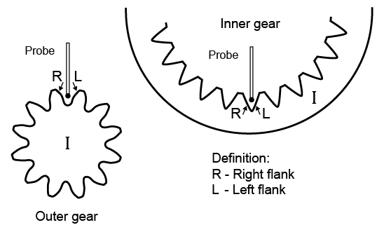

|
|
|


修形类型
要在修形列表中创建新条目，请单击加号按钮。如果要更改该单元格中的数值，请双击 列中的单元格以显示下拉列表。
接下来的两节（参见 齿廓修形 一章）和（参见 齿向修形 一章）描述了按照 ISO 21771 进行修形的方法。
为右齿面或左齿面输入不同的修形：在 下拉列表中，您可以指定修形是应用于右齿面、左齿面还是两侧齿面。
右/左齿面的定义（根据 ISO 21771）：

图 15.35：根据 ISO 21771 的右/左齿面定义
Modification type
To create a new entry in the list of modifications, click the Plus button. Double-click on a cell in the column to display a drop-down list if you want to change the value in that cell.
The next two sections, (see chapter Profile modifications) and (see chapter Flank line modifications), describe the method for performing modifications according to ISO 21771.
Inputting different modifications for right or left flank: In the drop-down list, you can specify whether a modification is to be applied to the right flank, the left flank or both flanks.
Definition of the right-hand/left-hand tooth flank (according to ISO 21771):
Figure 15.35: Definition of the right-hand/left-hand tooth flank according to ISO 21771